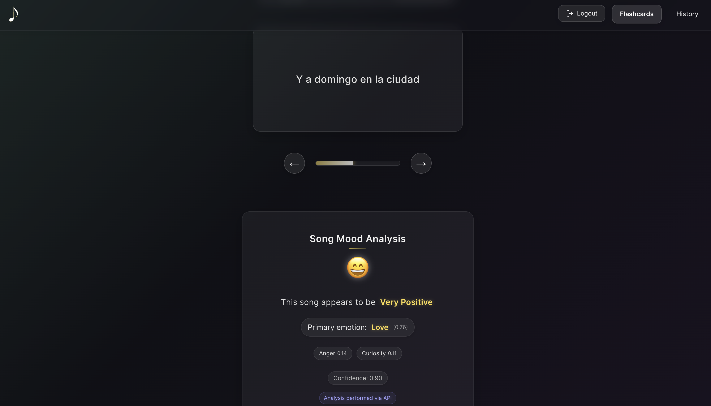

Portfolio
Crafting innovative, user-focused applications that solve real-world problems
Retriv.ai
Active DevelopmentAn AI-powered cognitive learning platform that leverages active recall, spaced repetition, and neuroscience principles to optimize study efficiency. Retriv uses speech recognition and AI feedback to help users learn faster with less time investment.
- Implements the Feynman technique to promote deeper understanding of complex topics
- WebSpeech API integration for hands-free studying and verbal practice
- Adaptive spaced repetition algorithm based on Ebbinghaus forgetting curve
- Personalized study analytics that identify knowledge gaps and optimize review timing
Vue.js 3
Vuex
Firebase
DeepSeek AI
WebSpeech API
Vue Router

LyricLingo
ProductionA full-stack language learning application that helps users master new languages through music. LyricLingo connects to Spotify, fetches currently playing songs, and generates translation flashcards with sentiment analysis to enhance the learning experience.
- Sophisticated Redis caching system that reduced API costs by 40%
- Custom lyric deduplication algorithm for efficient translation of repetitive content
- Seamless integration with Spotify, Genius Lyrics, and DeepL Translation APIs
- Natural Language Processing (NLP) for lyric sentiment analysis with 82% accuracy
React
Node.js
Express
MongoDB
Redis
JWT Auth
Framer Motion

Slumber: Sleep Cycle Calculator
ProductionA scientific web application that helps users optimize sleep schedules by aligning with natural sleep cycles and circadian rhythms. Slumber provides personalized recommendations based on chronotype analysis and sleep science research to improve sleep quality and daytime productivity.
- Evidence-based calculator for optimal bedtimes and wake-up times based on 90-minute sleep cycles
- Chronotype analysis for personalized recommendations (early bird, intermediate, night owl)
- Daily productivity guidance with peak performance periods and energy slump predictions
- Fluid animations and responsive design with elegant dark mode experience
Next.js 14
TypeScript
Tailwind CSS
React Hooks
App Router
LocalStorage